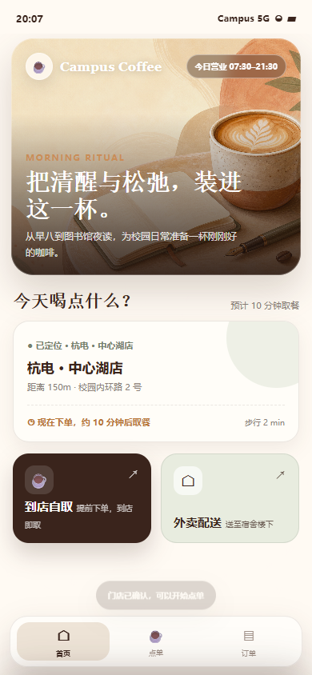
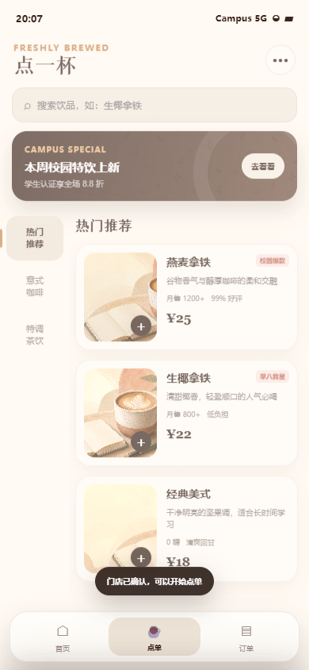
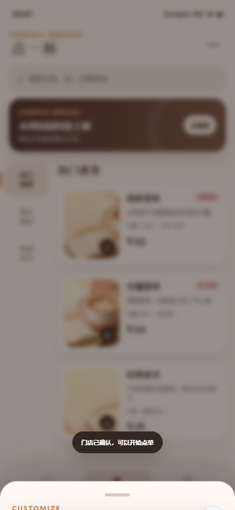
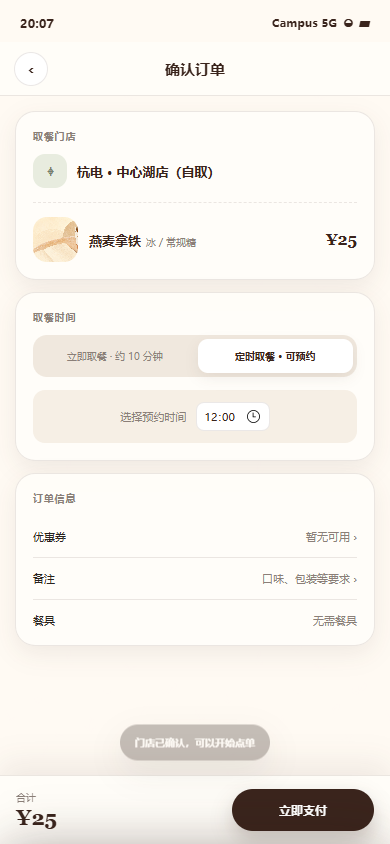
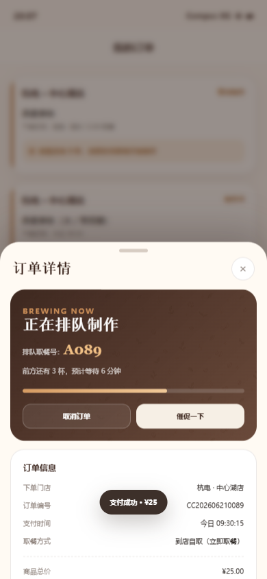

课间与早高峰时间紧张，学生需要在移动中快速完成选择与支付。
Mobile Service Design / 2026
CampusCoffee
面向校园高峰时段的移动点单体验。从门店确认到取餐队列，把容易焦虑的等待过程转化为清楚、温暖、可掌控的服务路径。
打开可交互原型 ↗
01 / Project Brief
一杯咖啡之前，先消除不确定
校园咖啡厅的核心问题不是“如何展示饮品”，而是如何降低选错门店、等待时间不明和定制步骤繁琐带来的成本。项目从真实点单流程出发，让每个关键状态都被明确看见。
先确认门店，再逐步定制；在支付前后持续显示地点、时间与订单状态。
门店弹窗、首页、菜单、定制、结算、订单详情及售后反馈流程。
02 / Service Flow
把等待设计成可预期的过程
流程遵循“地点先于商品、确认先于支付、状态先于催促”的原则。用户始终知道自己在哪家店、正在选择什么、还需等待多久。
首次进入强制确认门店，避免误下单。
菜单结合广告、销量与评价辅助决策。
分步定制规格，结算支持立即或预约取餐。
订单号、队列与预计时间持续更新，并提供取消和评价入口。
03 / Experience Details
温暖不等于含糊
奶油色和咖啡棕营造熟悉感，珊瑚橙只用于主要行动与进度，海沫绿负责辅助状态。柔和视觉之外，价格、取餐地点、等待时间与取消规则保持高对比和固定位置。
可信的菜单
首页和菜单同时呈现主推、销量与用户评价，让推荐不只是广告。汉堡菜单承担反馈与订单入口，减少页面跳转。
渐进式定制
杯型、温度、甜度与加料分步出现，当前价格同步更新。复杂选择被拆解，但总进度始终可见。
透明的队列
支付完成后强调订单号、前方杯数、预计取餐时间和取餐门店，帮助用户决定继续等待还是调整安排。
完整的服务闭环
订单详情提供取消、评价与售后入口。系统不在支付成功后结束，而是持续陪伴到取餐和反馈完成。
ACTION
#F1A23E
#F1A23E
SEAFOAM
#7FB7A1
#7FB7A1
ESPRESSO
#34231C
#34231C
CREAM
#FFF2D8
#FFF2D8
04 / Interface Gallery
让手机画面成为主角
纵向界面以大比例完整呈现，局部页面错位上浮，像被海流托起的点单票据。画框边缘保持克制，注意力集中在流程变化和状态信息。




设计反思：服务类界面最需要被设计的是不确定性。将门店、队列、时间和售后状态持续暴露出来，比增加促销模块更能建立信任。后续可用真实校园高峰数据验证预计时间表达，并补充无障碍字号和单手操作测试。
Continue Diving